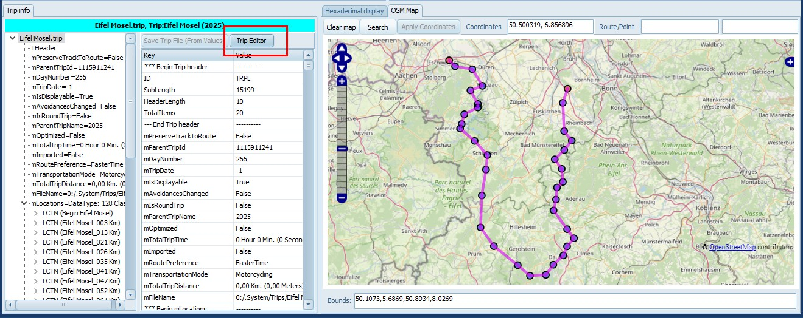
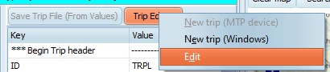
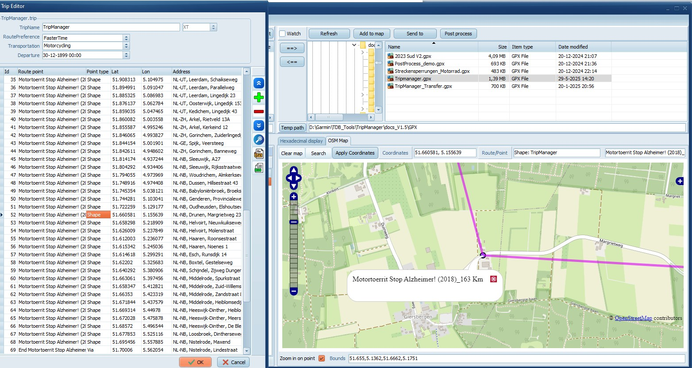
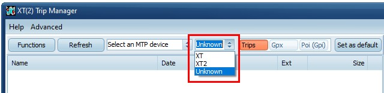
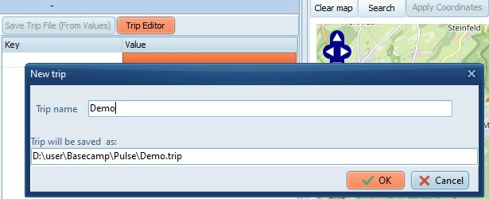
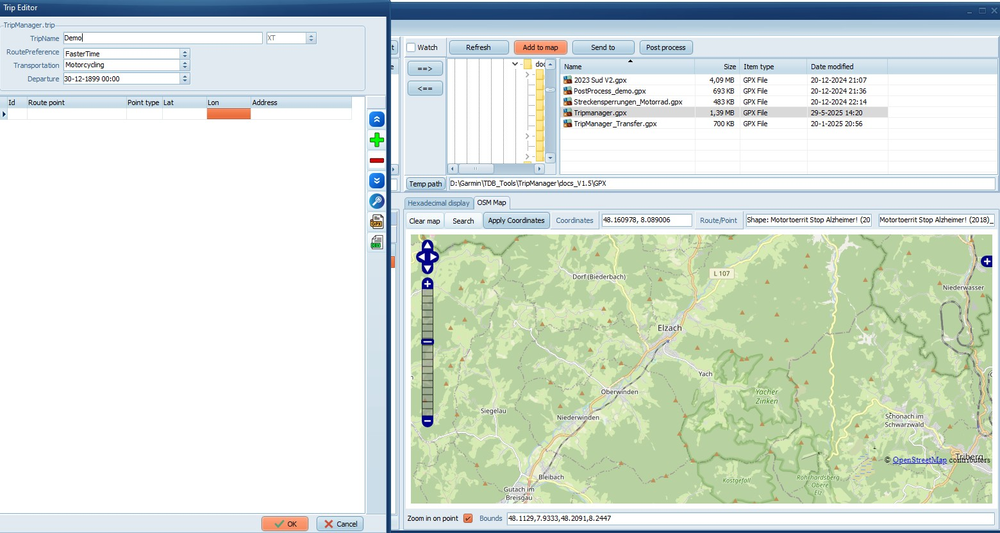
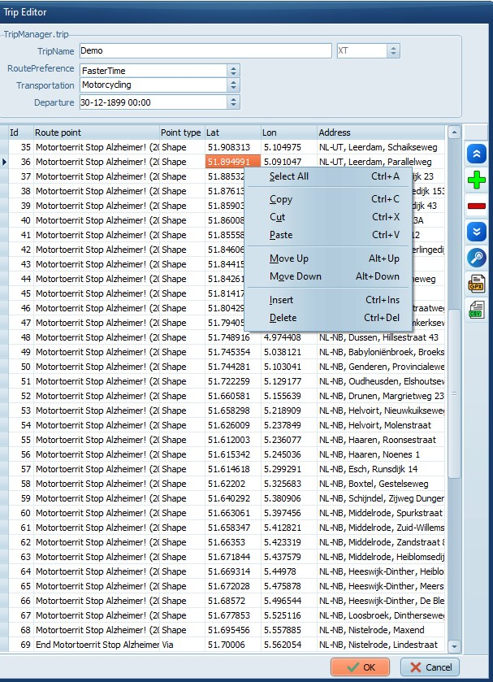

|
12) Using Trip Editor |
Previous Next |
|

|
|

|
|

|
|

|
|

|
|

|
|

|
Edit boxes TripName, RoutePreference,
Transportation and Departure can be edited.
The model (XT, or XT2) is readonly, the model of
a trip file can only be specified when creating .
The Grid columns can be edited, except for the
ID, which is autoassigned.
Right Click brings up the context menu. All
functions are also accessible using keyboard
shortcuts.
The coloured buttons on the right:
Move Up
Insert
Delete
Move down
Lookup address (if configured)
GPX
Import
Export
CSV
Import
Export
Clicking OK saves the trip file, Cancel discards the
changes.
You can use the clipboard to copy from/to Excel.
To avoid problems with the decimal format in the
GPS coordinates first set the format in Excel to
‘text’.
|